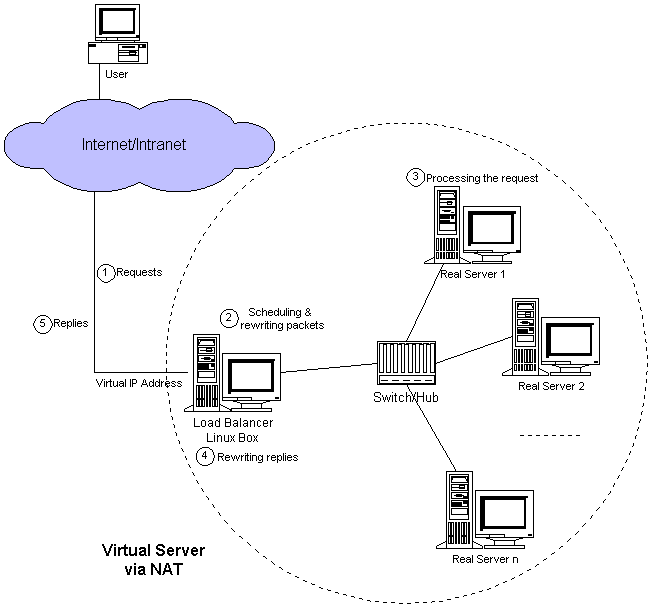

ip_forward
sysctl -w net.ipv4.ip_forward=1 or echo 1 > /proc/sys/net/ipv4/ip_forward or /etc/sysctl.conf 文件，保证其中有如下一行: net.ipv4.ip_forward = 1 执行: sysctl -p
iptables
sudo iptables -t nat -A POSTROUTING -j MASQUERADE -p tcp -o eth0 -s 172.16.0.0/16 -d 0.0.0.0/0 sudo iptables -t nat -A POSTROUTING -j MASQUERADE -p tcp -o eth1 -s 192.168.1.0/24 -d 0.0.0.0/0
ipvsadm
sudo ipvsadm -A -t 172.16.0.1:80 -s wlc sudo ipvsadm -a -t 172.16.0.1:80 -r 192.168.0.4:80 -m sudo ipvsadm -a -t 172.16.0.1:80 -r 192.168.0.5:80 -m -w 2